This is the solution to the tidyverse homework exercise. This web page is created using Quarto markdown, which is a great way to create reproducible documents that combine code, text and visualisations. We will cover this later in the course.
I have also included several other visualisations so you can have more fun with Tidyverse and a few other packages!
Setup, quality control and tidying
First, we load the tidyverse library and read in the COVID-19 dataset. We will also check for missing values and inconsistencies in the data, and then we will start exploring the data with some basic visualisations.
Province/State Country/Region Lat Long Date
34404 0 0 0 0
Confirmed Deaths Recovered Active WHO Region
0 0 0 0 0
## Print a summary of the datasetsummary(t)
Province/State Country/Region Lat Long
Length:49068 Length:49068 Min. :-51.796 Min. :-135.00
Class :character Class :character 1st Qu.: 7.873 1st Qu.: -15.31
Mode :character Mode :character Median : 23.634 Median : 21.75
Mean : 21.434 Mean : 23.53
3rd Qu.: 41.204 3rd Qu.: 80.77
Max. : 71.707 Max. : 178.06
Date Confirmed Deaths Recovered
Min. :2020-01-22 Min. : 0 Min. : 0.0 Min. : 0
1st Qu.:2020-03-08 1st Qu.: 4 1st Qu.: 0.0 1st Qu.: 0
Median :2020-04-24 Median : 168 Median : 2.0 Median : 29
Mean :2020-04-24 Mean : 16885 Mean : 884.2 Mean : 7916
3rd Qu.:2020-06-10 3rd Qu.: 1518 3rd Qu.: 30.0 3rd Qu.: 666
Max. :2020-07-27 Max. :4290259 Max. :148011.0 Max. :1846641
Active WHO Region
Min. : -14 Length:49068
1st Qu.: 0 Class :character
Median : 26 Mode :character
Mean : 8085
3rd Qu.: 606
Max. :2816444
The dataset looks pretty clean, with no missing values and reasonable summary statistics. We have 4 columns for the number of cases: Confirmed, Deaths, Recovered and Active. We can check that the confirmed cases are equal to the sum of deaths, recoveries and active cases, and we can also check if the confirmed cases are a running total over time.
## Check confirmed cases equal to the sum of deaths, recoveries and activet |>filter(Confirmed != Deaths + Recovered + Active) |>nrow()
[1] 0
## Is confirmed a running total? Let's plot all confirmed cases over timet |>group_by(Date) |>summarise(Total_Confirmed =sum(Confirmed)) |>ggplot(aes(x = Date, y = Total_Confirmed)) +geom_line() +labs(title ="Total Confirmed COVID-19 Cases Over Time",x ="Date",y ="Total Confirmed Cases") +theme_minimal()
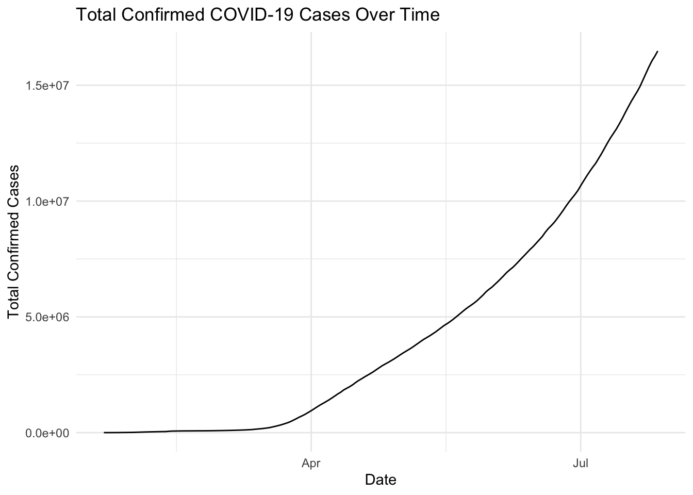
This looks like a cumulative distribution of cases over time. This means the last date in the data has the total statistics. Let’s save this date as it will be useful for looking at totals.
latest_date <-max(t$Date)
The dataset includes both country-level and province-level data. Let’s merge the provinces into a single country. We can group by country and date, and then sum the confirmed cases, deaths, recoveries and active for each country on each date. We will lose some granularity, e.g. combining all the french colonies (some are in the pacific ocean) into France, but it will make it easier to compare countries.
tm <- t |>group_by(`Country/Region`, Date, `WHO Region`) |>summarise(Confirmed =sum(Confirmed),Deaths =sum(Deaths),Recovered =sum(Recovered),Active =sum(Active)) |>rename(Country =`Country/Region`, WHO_Region =`WHO Region`) |># rename `Country/Region` to Country for easier typingungroup()
Visualisation
Let’s start by looking at the total confirmed cases and deaths for each country as of the most recent date in the dataset. We can make a scatter plot with confirmed cases on the x-axis and deaths on the y-axis, and colour the points by WHO region to see if there are any regional trends in the data. We will use a log scale for both axes to better visualise the trends, as there are some countries with very high numbers of cases and deaths that would dominate the plot otherwise.
## Let's look at the total deaths vs confirmed cases for each country as of the most recent date.scatter <- tm |>filter(Date == latest_date) |>ggplot(aes(x = Confirmed, y = Deaths, colour = WHO_Region,text = Country)) +geom_point() +scale_x_log10() +## Use a log scale to better visualise the trendsscale_y_log10() +scale_colour_brewer(palette ="Dark2") +labs(title ="Total Deaths vs Confirmed Cases",x ="Total Confirmed Cases (log scale)",y ="Total Deaths (log scale)",colour ="WHO Region") +theme_minimal()scatter
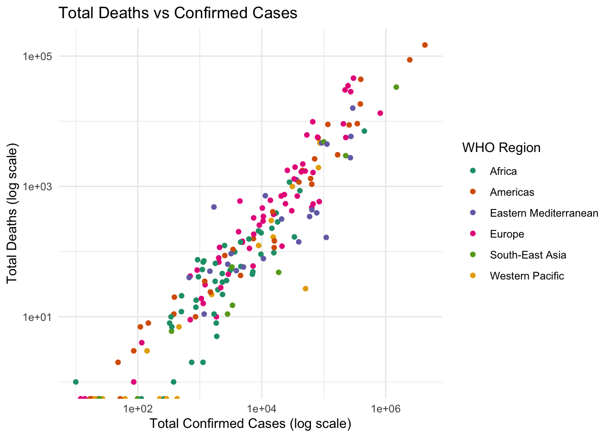
We can make this plot interactive with the plotly library, so we can identify individual countries. Try hovering over some of the points.
# install.packages("plotly")library(plotly)## Add a tooltip for hover text with the Country, Confirmed and Deathsggplotly(scatter, tooltip =c("text", "x", "y"))
We are interested in comparing the trends for a few specific countries. Let’s make a list and identify them on our plot. We will use the ggrepel package to add labels to the points.
## Let's make a list of countries we are interested incountries <-c("Brazil", "Italy", "China", "New Zealand", "United Kingdom", "US")## We can make the scatter plot again and label these countries with ggrepel package# install.packages("ggrepel")library(ggrepel)tm |>filter(Date == latest_date) |>ggplot(aes(x = Confirmed, y = Deaths, colour = WHO_Region)) +geom_point() +geom_label_repel(data = tm |>filter(Country %in% countries, Date == latest_date),aes(label = Country), size =4,nudge_x =3,show.legend =FALSE) +## Add labels to the pointsscale_x_log10() +## Use a log scale to better visualise the trendsscale_y_log10() +scale_colour_brewer(palette ="Dark2") +labs(title ="Total Deaths vs Confirmed Cases",x ="Total Confirmed Cases (log scale)",y ="Total Deaths (log scale)",colour ="WHO Region") +theme_minimal()
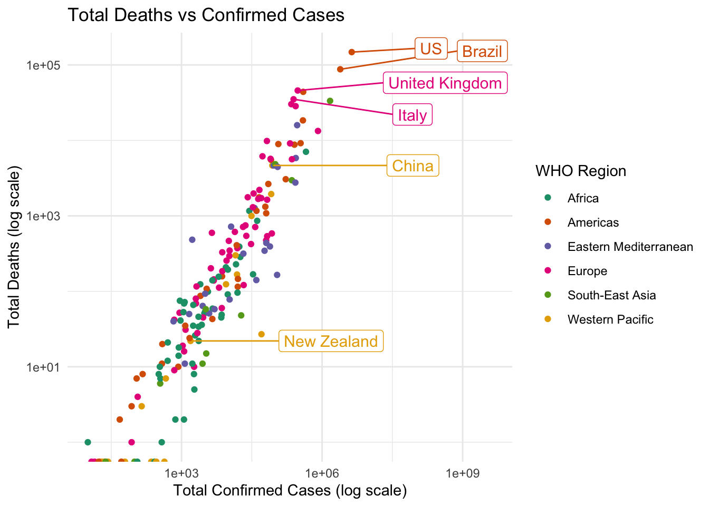
That’s our finished plot! But let’s have some more fun with this dataset. Let’s look at the trends in confirmed cases over time for these countries. We can use a line plot to show how the number of confirmed cases has changed over time for each country, and we can colour the lines by country to make it easier to compare them.
## Let's look at the total cases over time for these individual countriestm |>filter(Country %in% countries) |>ggplot(aes(x = Date, y = Confirmed, colour = Country)) +geom_line() +labs(title ="Confirmed COVID-19 Cases Over Time",x ="Date",y ="Confirmed Cases") +theme_minimal()
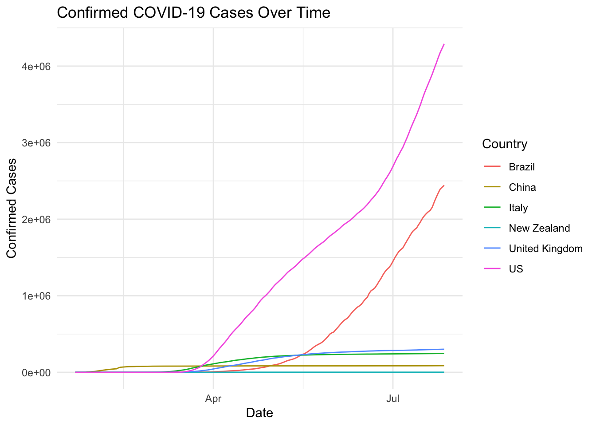
What trends can we see?
China had an initial rise in cases early on
There was a spike in cases in Italy before the virus spread to the United Kingdom
The US and then Brazil had a very large surge
New Zealand had very few cases throughout
This all fits with my memory of the pandemic.
Wow, there are a lot of cases in the US and Brazil! We could add a log scale to the y-axis to better visualise the trends.
tm |>filter(Country %in% countries) |>ggplot(aes(x = Date, y = Confirmed, colour = Country)) +geom_line() +labs(title ="Confirmed COVID-19 Cases Over Time (Log Scale)",x ="Date",y ="Confirmed Cases (log scale)") +scale_y_log10() +theme_minimal()
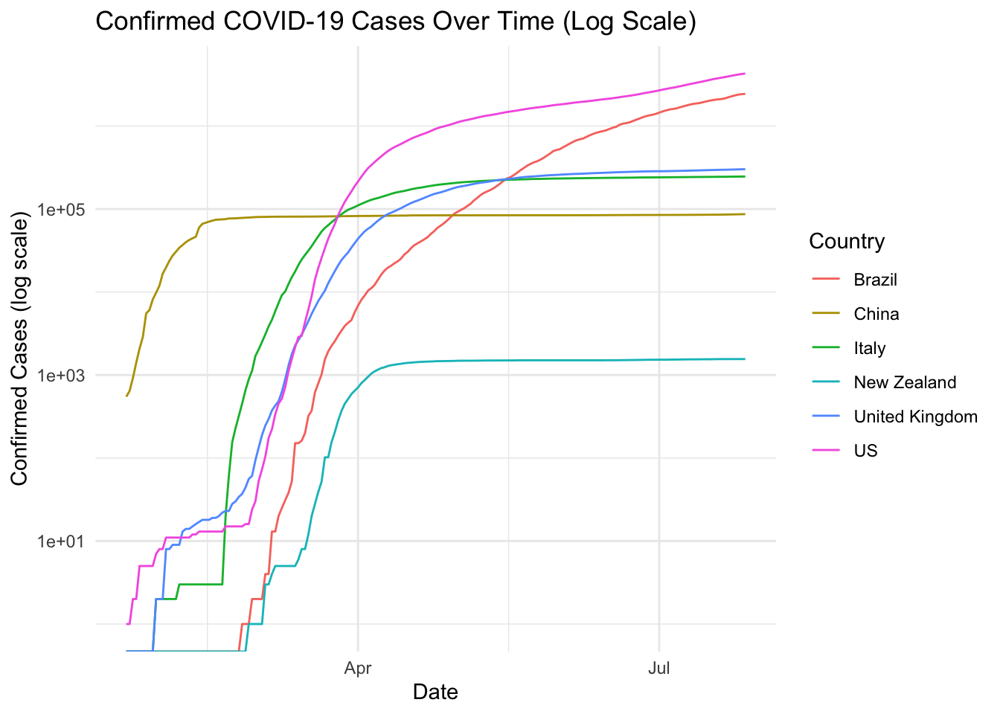
Hmm.We can see the trends for the lower case numbers in New Zealand and China more clearly on the log scale, but it diminishes the trends for the higher case numbers.
Instead, we could use a facet() to plot each country separately with its own y-axis scale.
This shows the trends for each country more clearly, but it makes it harder to compare the absolute number of cases between countries. It will also be difficult to plot more than a few countries. Maybe we could bin countries with similar total case numbers and plot them in groups.
tm_grouped <- tm |>filter(Country %in% countries) |>group_by(Country) |>mutate(total_cases =max(Confirmed)) |>## Create a column with total cases for each countryungroup() |>mutate(total_case_group =cut_number(total_cases, n =3))## Bin countries into 3 groups based on total casestm_grouped |>ggplot(aes(x = Date, y = Confirmed, colour = Country)) +geom_line() +labs(title ="Confirmed COVID-19 Cases Over Time",x ="Date",y ="Confirmed Cases") +facet_wrap(~ total_case_group, scales ="free_y",nrow=3) +theme_minimal()
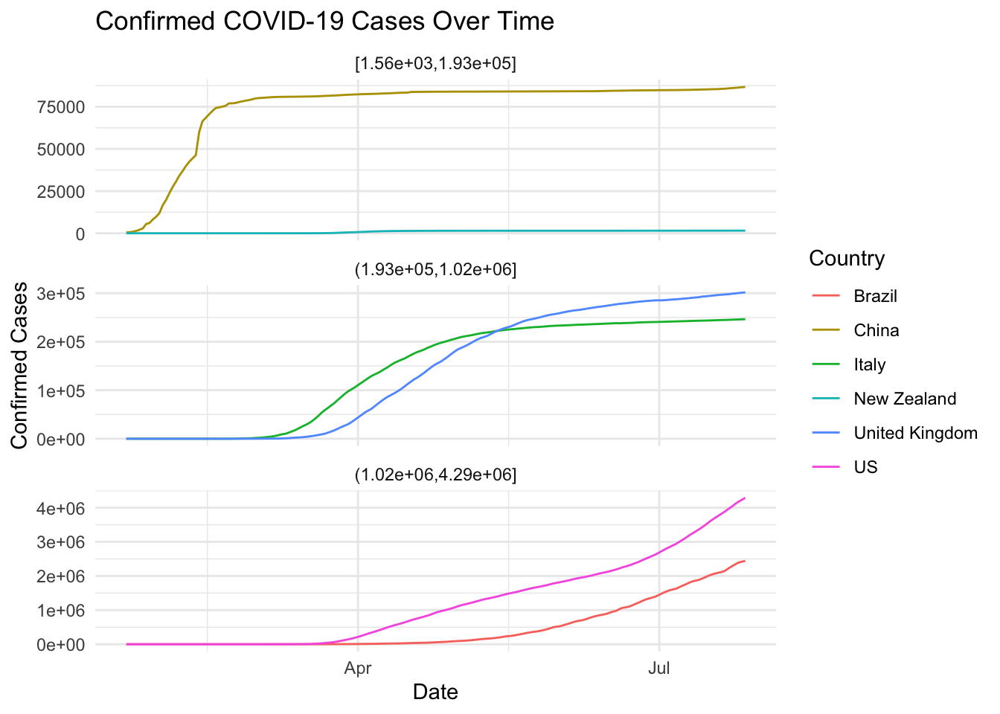
Brazil and the US have a lot of cases. What factors other than the virus are driving this?:
Population size
Widely available testing and reporting
We could normalise cases to population size to get a better sense of the relative impact of the virus in different countries. We can use the WDI package to get population data for 2020 from the World Bank, and then merge that with our COVID-19 dataset.
#install.packages("WDI")library(WDI)population_data <-WDI(country ="all", indicator ="SP.POP.TOTL", start =2020, end =2020, extra =TRUE)population_data <- population_data |>select(iso3c, country, SP.POP.TOTL)
Now we use the inner_join() function to merge the two datasets based on the country name. This will only keep rows where there is a match in both datasets.
The join_by() function specifies that we want to join on the “Country” column from the COVID-19 dataset and the “country” column from the population dataset.
Dplyr has other join functions like left_join() and full_join() that keep all rows from one or both datasets.
tm_pop <- tm |>inner_join(population_data, by =join_by("Country"=="country"))## calculate cases per million populationtm_pop <- tm_pop |>mutate(Cases_per_Million = (Confirmed / SP.POP.TOTL) *1000000)tm_pop |>filter(Country %in% countries) |>ggplot(aes(x = Date, y = Cases_per_Million, colour = Country)) +geom_line() +labs(title ="Confirmed COVID-19 Cases Over Time",x ="Date",y ="Confirmed Cases per million population") +theme_minimal()
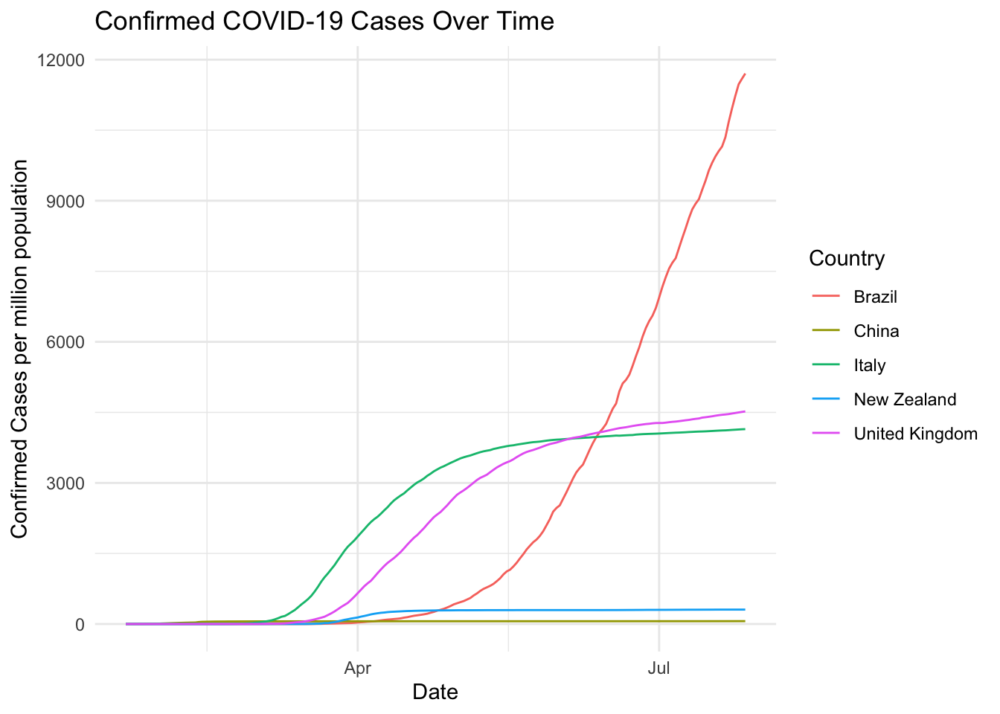
What happened to the US? We lose some countries where the names differ in the population data e.g “US” vs “United States”. If we wanted to pursue this analysis we would need to clean this up first.
Now let’s look at the top 10 countries by cases per million population as of the most recent date in the dataset.
top_countries <- tm_pop |>filter(Date == latest_date) |>arrange(desc(Cases_per_Million)) |>head(10) |>pull(Country)## Plot these top 10 countries over time.tm_pop |>filter(Country %in% top_countries) |>ggplot(aes(x = Date, y = Cases_per_Million, colour = Country)) +geom_line() +labs(title ="Confirmed COVID-19 Cases Over Time",x ="Date",y ="Confirmed Cases per million population") +theme_minimal()
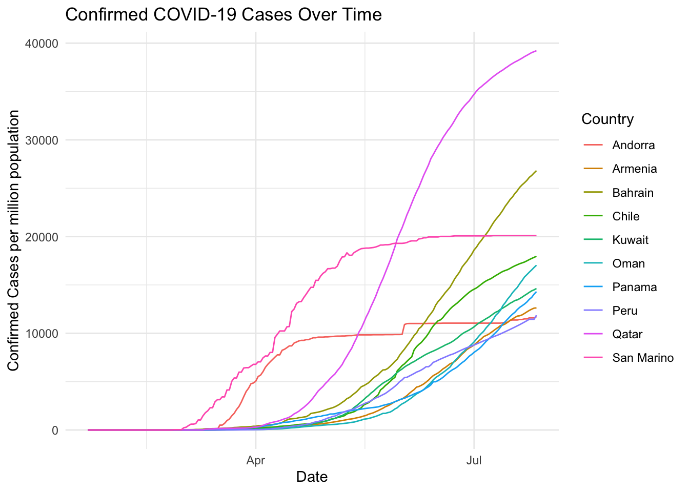
What can you say about these countries? There seems to be a few small countries with small populations. Let’s see where they are on a scatter plot of cases vs population size. We can add labels to the points for the top 10 countries to identify them.
We can add a third variable to this plot by using the size of the points to represent the number of deaths.
## We can add Deaths as a third variable (size)tm_pop |>filter(Date == latest_date) |>ggplot(aes(x = SP.POP.TOTL, y = Confirmed, colour = WHO_Region, size = Deaths )) +geom_point() +geom_label_repel(data = tm_pop |>filter(Country %in% top_countries, Date == latest_date),aes(label = Country), size =4,nudge_x =-1,show.legend =FALSE) +## Add labels to the pointsscale_x_log10() +## Use a log scale to better visualise the trendsscale_y_log10() +labs(title ="Population vs Confirmed Cases",x ="Population Size (log scale)",y ="Total Confirmed Cases (log scale)",size ="Total Deaths",colour ="WHO Region") +theme_minimal()
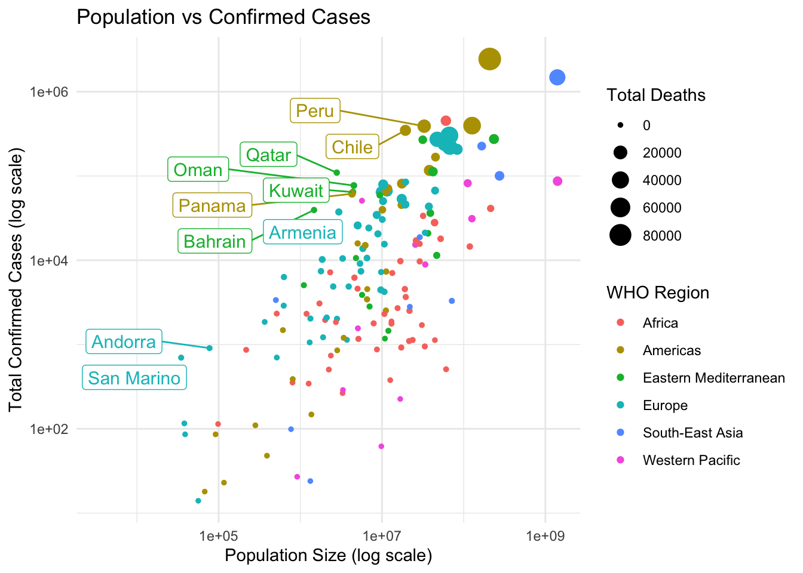
Summary statistics can be misleading. Andorra and San Marino have very high cases per million people, but this plot shows that the overall number of cases was still low. If we wanted to find the “top 10” countries affected by COVID we would need to include more nuance (total cases, population size, death and recovery rates, time of outbreak, etc).
Let’s go back to the full dataset and look at daily new cases by calculating the difference in confirmed cases from one day to the next for each country.
The lag() function will help us get the previous day’s confirmed cases, and we can subtract that from the current day’s confirmed cases to get the new cases for each day.
tm <- tm |>group_by(Country) |>arrange(Date) |>mutate(New_Cases = Confirmed -lag(Confirmed, default =0)) |>ungroup()## Now we can plot new cases over time for the same countries.tm |>filter(Country %in% countries) |>ggplot(aes(x = Date, y = New_Cases, colour = Country)) +geom_line() +labs(title ="Daily New COVID-19 Cases Over Time",x ="Date",y ="New Cases") +theme_minimal()
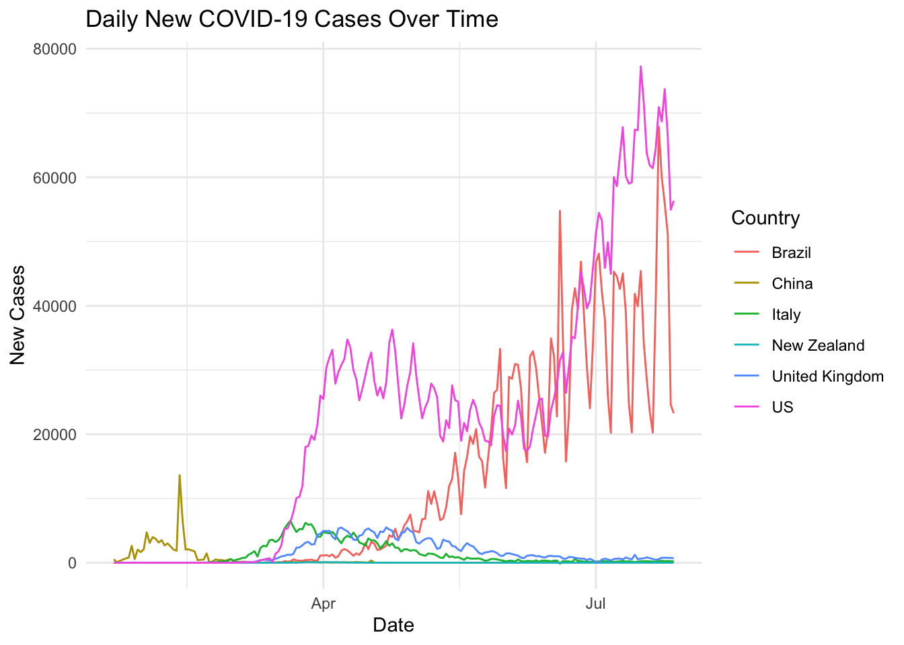
The data is quite spiky. I wonder if some of this is due to reporting delays, e.g. fewer cases reported on weekends.
Can we check this by plotting the number of cases reported on each day of the week?
tm <- tm |>mutate(Day_of_Week =wday(Date, label =TRUE))tm |>filter(Country %in% countries) |>group_by(Country, Day_of_Week) |>summarise(New_Cases =mean(New_Cases, na.rm =TRUE)) |>ggplot(aes(x = Day_of_Week, y = New_Cases, fill = Country)) +geom_col() +labs(title ="Distribution of Daily New COVID-19 Cases by Day of the Week",x ="Day of the Week",y ="New Cases") +facet_wrap(~Country,scale="free") +theme_minimal() +theme(axis.text.x =element_text(angle =45, hjust =1))
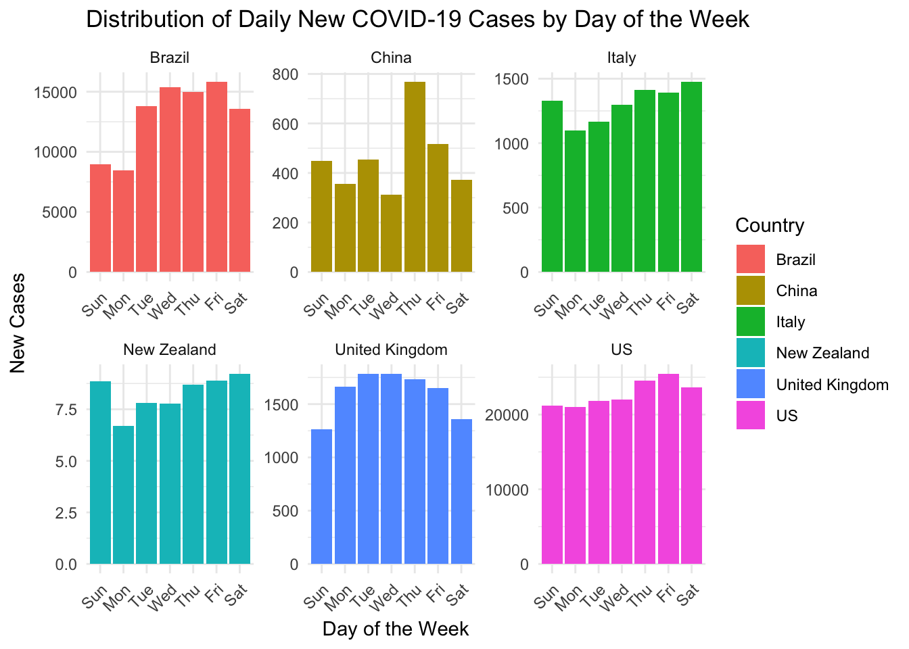
There does seem to be less on Sunday in some cases… Maybe we should look at the whole dataset:
tm |>group_by(Date) |>summarise(Global_New_Cases =sum(New_Cases, na.rm =TRUE)) |># 1. Create the weekend flagmutate(is_weekend =ifelse(wday(Date, label =TRUE) %in%c("Sat", "Sun"), "Weekend", "Weekday")) |>ggplot(aes(x = Date, y = Global_New_Cases, fill = is_weekend)) +geom_col() +# 2. Manually set your colorsscale_fill_manual(values =c("Weekday"="#33658A", "Weekend"="#F26419")) +labs(title ="Global Daily New COVID-19 Cases Over Time",subtitle ="Weekends highlighted in orange",x ="Date",y ="New Cases",fill ="Day Type") +theme_minimal()
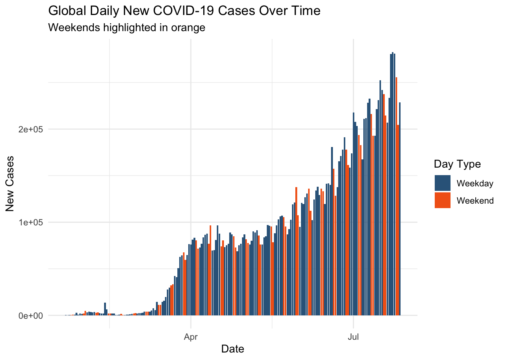
It definitely looks like fewer cases are reported on Sunday and Monday. Numbers peak throughout the week then tail off again. To remove this bias we can smooth the data using a rolling average of 7 days to see the trends more clearly.
The zoo package has a convenient rollmean() function that we can use to calculate a rolling average of new cases over a 7-day window.
#install.packages("zoo")library(zoo)tm_smoothed <- tm |>group_by(Country) |>arrange(Date) |>mutate(New_Cases_Smoothed =rollmean(New_Cases, k =7, fill =NA, align ="right")) |>ungroup()tm_smoothed |>filter(Country %in% countries) |>ggplot(aes(x = Date, y = New_Cases_Smoothed, colour = Country)) +geom_line() +labs(title ="Smoothed Daily New COVID-19 Cases Over Time",x ="Date",y ="New Cases (7-day rolling average)") +theme_minimal()
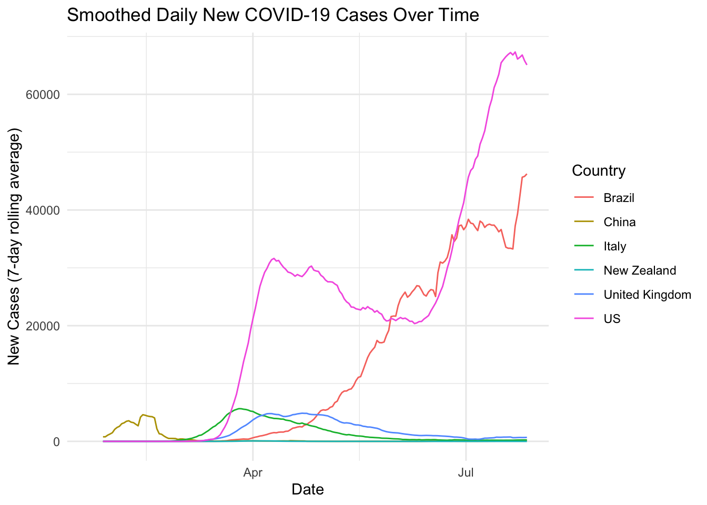
This gives us a much clearer picture of the trends in new cases over time, and we can see the waves of the virus more clearly.
We could facet our plot by WHO region to see regional trends in the data.
tm_smoothed |>filter(Country %in% countries) |>ggplot(aes(x = Date, y = New_Cases_Smoothed, group = Country, colour = Country)) +geom_line() +facet_wrap(~ WHO_Region, nrow =3,scales ="free") +labs(title ="Smoothed Daily New COVID-19 Cases Over Time",x ="Date",y ="New Cases (7-day rolling average)") +theme_minimal()
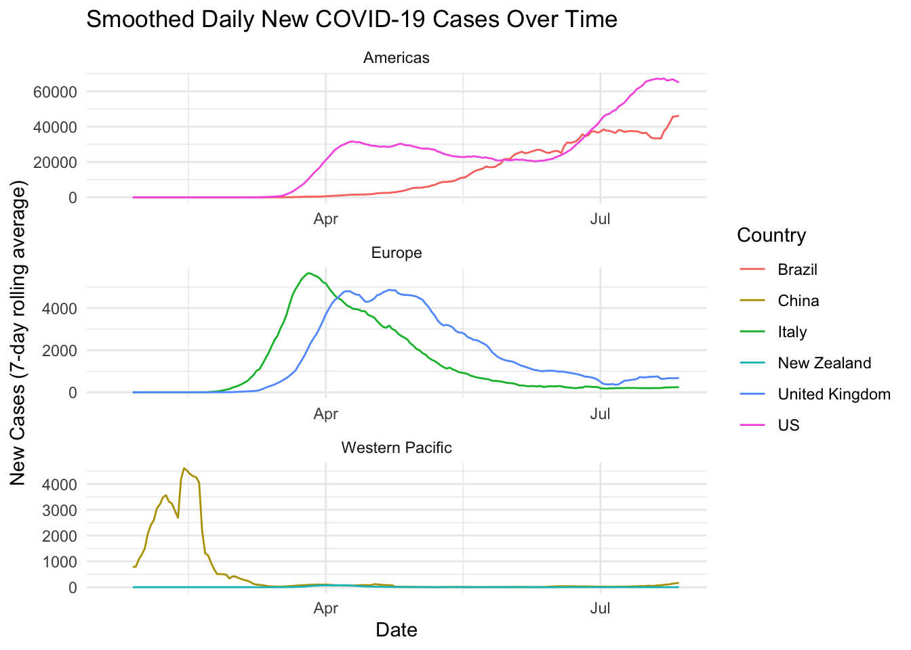
We can add labels to our lines so we don’t have to refer to the legend.
tm_smoothed |>filter(Country %in% countries) |>ggplot(aes(x = Date, y = New_Cases_Smoothed, group = Country, colour = Country)) +geom_line() +geom_text(data = tm_smoothed |>filter(Date ==max(Date) & Country %in% countries), aes(label = Country), hjust =-0.1, vjust =0.5, size =3) +facet_wrap(~ WHO_Region, nrow =3,scales ="free") +labs(title ="Smoothed Daily New COVID-19 Cases Over Time",x ="Date",y ="New Cases (7-day rolling average)") +theme_minimal() +## Turn off clipping and increase the margin on the right to make space for the labelscoord_cartesian(clip ="off") +theme(plot.margin =margin(10,60,10,10)) +theme(legend.position ="none") ## Turn off the legend
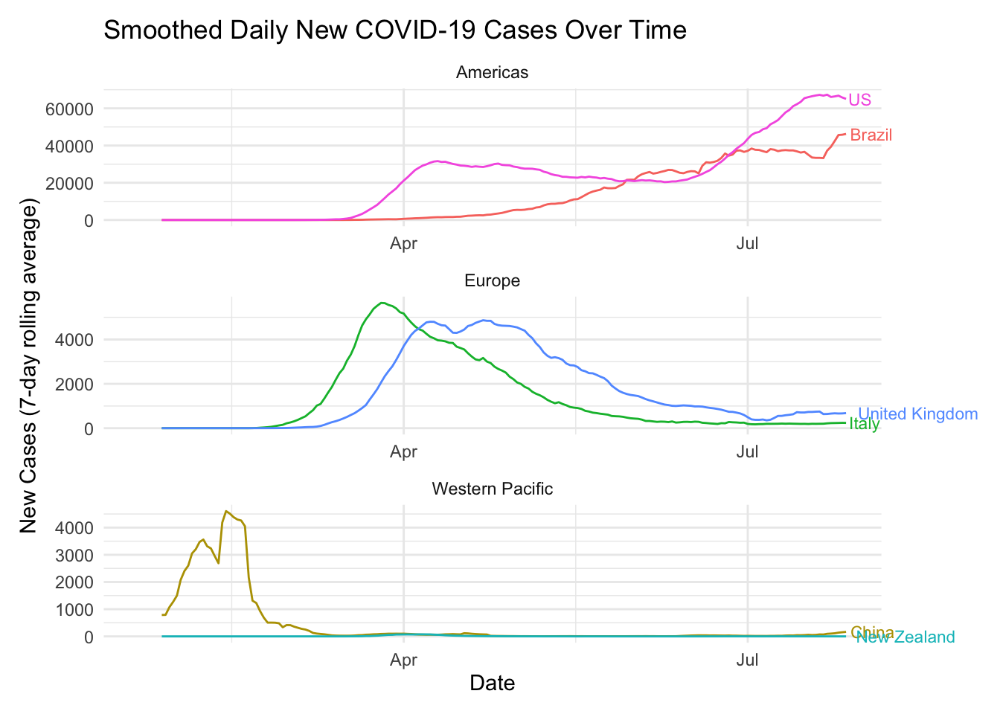
Next, we’ll have a look at the top 10 countries by total confirmed cases as of the most recent date in the dataset.
top_total <- tm |>filter(Date == latest_date) |>arrange(desc(Confirmed)) |>select(Country, Confirmed) |>head(10) |>pull(Country)## Bar plot of total confirmed cases for the top 10 countriestm |>filter(Date == latest_date, Country %in% top_total) |>ggplot(aes(x =reorder(Country, Confirmed), y = Confirmed, fill = WHO_Region)) +geom_col() +geom_text(aes(label = scales::comma(Confirmed)), hjust =1, size =3, colour ="white") +## Add labels to the bars, and format the numbers with commasscale_fill_brewer(palette ="Dark2") +labs(title ="Total Confirmed COVID-19 Cases by Country",x ="Country",y ="Total Confirmed Cases") +theme_minimal() +theme(legend.position ="bottom") +coord_flip() ## Flip the axes to make it easier to read the country names
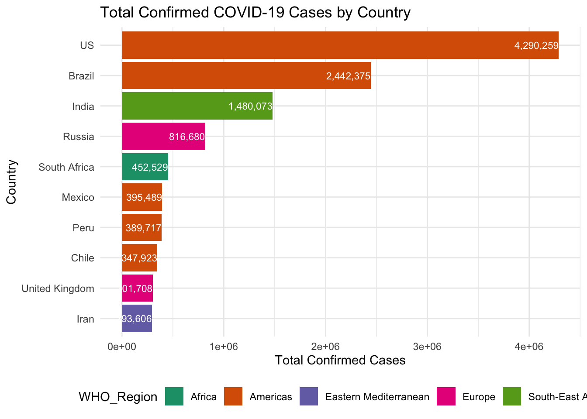
We could see how countries performed in terms of controlling the effect of the virus by looking at the number of deaths per 100 cases. This will give us a sense of how deadly the virus was in each country, and how well the healthcare system was able to manage the cases.
tm <- tm |>mutate(Deaths_per_100_cases = (Deaths / Confirmed) *100)## Let's plot the deaths per 100 cases over time for the top countries.tm |>filter(Country %in% top_total) |>ggplot(aes(x = Date, y = Deaths_per_100_cases, colour = Country)) +geom_line() +labs(title ="Deaths per 100 Cases Over Time",x ="Date",y ="Deaths per 100 Cases") +theme_minimal()
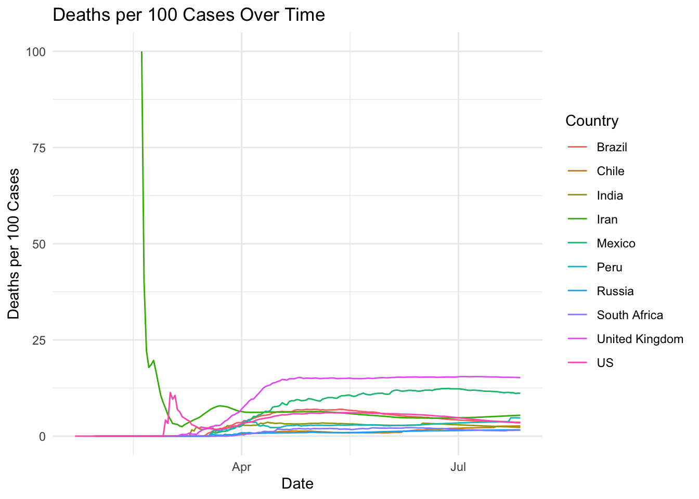
Something weird is going on with Iran. It has a very high number of deaths per 100 cases at the start…
Because the first two cases in Iran were both deaths, the deaths per 100 cases is 100% at the start. Let’s only look at data once we get at least 1000 confirmed cases to get a more accurate picture of the trends. We’ll add a rolling average to smooth the data over 7 days as well.
tm_deaths_smoothed <- tm |>filter(Country %in% top_total, Confirmed >=1000) |>group_by(Country) |>mutate(Deaths_per_100_cases =rollmean(Deaths_per_100_cases, k =7, fill =NA, align ="right")) |>ungroup()tm_deaths_smoothed |>ggplot(aes(x = Date, y = Deaths_per_100_cases, colour = Country)) +geom_line() +labs(title ="Smoothed deaths per 100 Cases Over Time",x ="Date",y ="Deaths per 100 Cases") +geom_text(data = tm_deaths_smoothed |>filter(Date ==max(Date)), aes(label = Country), hjust =-0.1, vjust =0.5, size =3) +theme_minimal() +## Turn off clipping and increase the margin on the right to make space for the labelscoord_cartesian(clip ="off") +theme(plot.margin =margin(10,60,10,10)) +theme(legend.position ="none") ## Turn off the legend
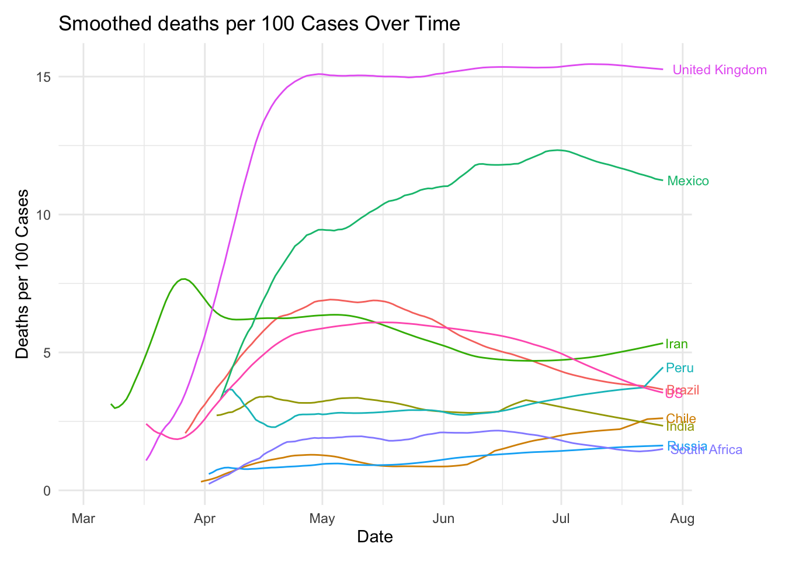
We have some overlapping labels here. We can use the ggrepel package to help with this. The geom_text_repel() function will automatically adjust the position of the labels to avoid overlaps.
tm_deaths_smoothed |>ggplot(aes(x = Date, y = Deaths_per_100_cases, colour = Country)) +geom_line() +## use geom_text_repel() instead of geom_text(). Set direction to "y" to only adjust the y position of the labels and nudge_x to move the labels to the right of the last data pointgeom_text_repel(data = tm_deaths_smoothed |>filter(Date ==max(Date)), aes(label = Country), direction ="y",hjust =0, nudge_x =10, segment.color =NA,show.legend =FALSE) +labs(title ="Smoothed deaths per 100 Cases Over Time",x ="Date",y ="Deaths per 100 Cases") +theme_minimal() +coord_cartesian(clip ="off") +theme(plot.margin =margin(10,60,10,10)) +theme(legend.position ="none") ## Turn off the legend
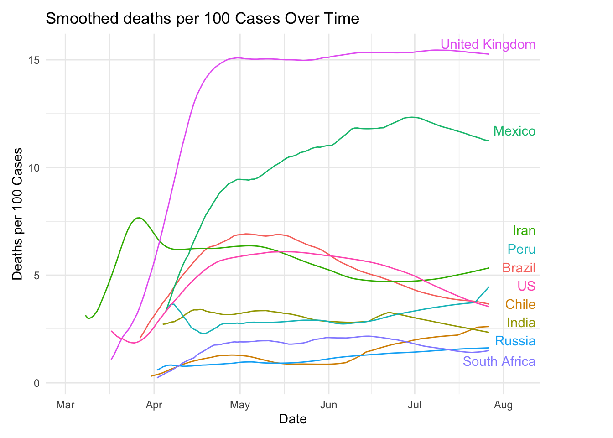
We can animate a bubble plot using gganimate to see Deaths per 100 cases change over time.
## Set up the bubble plotbubble_plot <- tm_deaths_smoothed |>ggplot(aes(x = Date, y = Deaths_per_100_cases, colour = Country)) +geom_line(aes(group=Country)) +geom_point(alpha =0.7, aes(size = Confirmed)) +geom_text_repel(aes(label = Country), direction ="y",hjust =0, nudge_x =10, segment.color =NA,show.legend =FALSE ) +labs(title ="Deaths per 100 Cases Over Time",x ="Date",y ="Deaths per 100 Cases",size ="Total confirmed cases") +theme_minimal() +coord_cartesian(clip ="off") +#theme(plot.margin = margin(5,40,5,5)) +scale_size(range =c(1, 10)) +guides(colour ="none", size =guide_legend(title ="Total Confirmed Cases"))## Use gganimate to create a gif#install.packages(gganimate)library(gganimate)anim <- bubble_plot +# 2. Add the animation logictransition_reveal(Date) +view_follow(fixed_y =TRUE)animate(anim, renderer =gifski_renderer(),end_pause =40,res =600)
Let’s do one more fun thing. We can use the leaflet package to create an interactive map of total deaths. We use the latitude and longitude for each country to plot circles on the map.